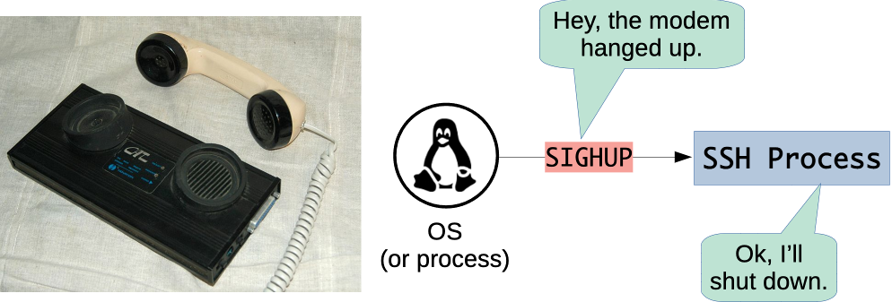
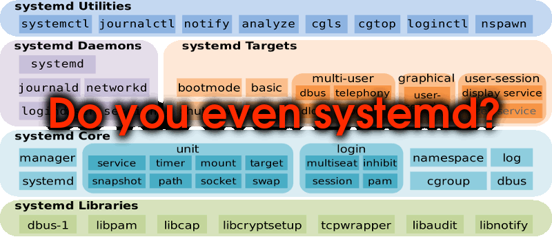

# Process Management on Linux Architecture & Deployment <!-- .element: class="subtitle" --> **Notes:** Learn how processes are told to stop or reload with signals, and how systemd starts, stops and restarts the processes of a Linux server. --- ## Signals - A **notification** the kernel delivers to a process - The process stops what it was doing, and runs a **handler** - Its own handler, or the **default** one, which usually terminates it **Notes:** Processes are isolated, so one cannot reach into another to tell it to stop or reload. It asks the kernel, with a system call, to send a **signal**. The kernel also sends signals of its own. A signal does to a process what [an interrupt](/2026/course/411-how-a-computer-works/slides/#the-machine-at-boot) does to a processor: it can arrive at any moment, and the process runs the code that handles it. The `kill` command sends a signal to a process by its PID, and is named after the default handler of most signals. --- ## `Ctrl-C` - The kernel turns `Ctrl-C` into a **`SIGINT`** signal - It goes to the command running in the **foreground** of the terminal - The program never sees the key **Notes:** The terminal is managed by the kernel, which recognizes `Ctrl-C` and sends `SIGINT` to every process of the foreground command: with `npm run dev`, to both `npm` and `node`. A program that handles `SIGINT` itself can choose not to stop. --- ## Ask, then force <table class="text-3xl"> <thead> <tr> <th>Signal</th> <th>Means</th> <th>Can the process handle it?</th> </tr> </thead> <tbody> <tr> <td><code>SIGTERM</code></td> <td>Please terminate</td> <td>Yes: it can clean up first</td> </tr> <tr> <td><code>SIGKILL</code></td> <td>Terminated by the kernel</td> <td>No: none of its code runs</td> </tr> </tbody> </table> **Notes:** `kill` sends `SIGTERM` by default. A program can handle it to finish its requests, write its files and close its connections before it exits, or ignore it. `kill -9` sends `SIGKILL`, which the kernel carries out itself: the process ends with no chance to clean up, so it is the last resort. --- ## Hang up <p></p> - Closing a terminal sends **`SIGHUP`** to its processes - This is why an application **stops when you disconnect** - Many services use it to **reload their configuration** **Notes:** The name comes from the modem that connected a terminal to the computer hanging up. When an SSH connection closes, the kernel sends `SIGHUP` to the shell and the programs it was running, which terminate. Programs that run without a terminal never receive it that way, so nginx and PostgreSQL, among others, use it to mean "read your configuration again". --- ## Managing processes - An application started by hand, in an SSH session: - **stops** when the session closes - **does not come back** after a crash or a reboot - A server needs its processes started, in order, and restarted **Notes:** Some processes depend on others: Guess It needs PostgreSQL to load and save the leaderboard, so the database has to start first. --- ## Process managers <p></p> - A **process manager** starts, watches and restarts other processes - The **init process**, PID 1, manages them all - On Ubuntu, it is **systemd** **Notes:** The init process is the first process the kernel starts [at boot](/2026/course/411-how-a-computer-works/slides/#booting), and every other process descends from it. Other systems have their own: launchd on macOS, the Service Control Manager on Windows. Smaller ones, such as PM2 for Node.js, run a single application. --- ## Describe, do not type <table class="text-3xl"> <thead> <tr> <th>What is done by hand</th> <th>What a unit file says</th> </tr> </thead> <tbody> <tr> <td>Connect as a user</td> <td><code>User=</code></td> </tr> <tr> <td>Make sure the database runs</td> <td><code>After=</code></td> </tr> <tr> <td>Go to the application's directory</td> <td><code>WorkingDirectory=</code></td> </tr> <tr> <td>Set the environment variables</td> <td><code>EnvironmentFile=</code></td> </tr> <tr> <td>Run the command</td> <td><code>ExecStart=</code></td> </tr> <tr> <td><em>Nothing, after a crash</em></td> <td><code>Restart=</code></td> </tr> <tr> <td><em>Nothing, after a reboot</em></td> <td><code>WantedBy=</code></td> </tr> </tbody> </table> **Notes:** systemd does not replay typed commands: a **unit file** describes the process to manage. One that describes a long-running process is a **service**, named after its file (`guessit.service`). `systemctl` asks systemd to enable, start, stop or restart it. To stop it, systemd sends `SIGTERM`, then `SIGKILL` if the process is still running 90 seconds later. --- ## Restarting on failure - A process **fails** when it exits with a status other than `0` - Or when it is **killed** by a signal such as `SIGKILL` - systemd can **restart** it, with a new PID **Notes:** This is `Restart=on-failure`. An [exit status](/2026/course/408-unix-processes/#exit-status) of `0`, or `SIGTERM`, `SIGINT` or `SIGHUP`, counts as a stop that was asked for, not a failure. Under `node --watch`, a crashed application [waits for a file to change](/2026/course/413-how-to-improve/) instead of exiting, so systemd would never see it fail: under systemd, it runs in production mode. --- ## Logs - A service has **no terminal** - Its standard output and error go to the **journal** - When a service misbehaves, **read its logs first** **Notes:** systemd collects the [standard streams](/2026/course/408-unix-processes/#standard-streams) of its services, and journald records them, timed, along with what systemd did to each service and why. `journalctl` reads them.
GitHub
Backup copy